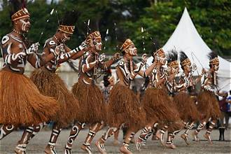
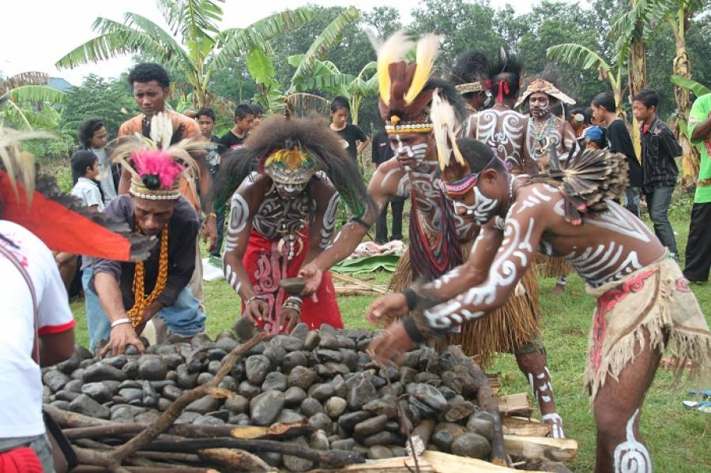

Mengenal Kehidupan dan Budaya Masyarakat Mimika

KMimika merupakan salah satu kabupaten di Provinsi Papua Tengah yang memiliki kekayaan budaya dan tradisi yang beragam. Masyarakat Mimika terdiri dari berbagai suku dengan kebiasaan, bahasa, dan cara hidup yang berbeda.
Kehidupan Suku Amungme dan Kamoro

Suku Amungme dikenal sebagai masyarakat yang tinggal di kawasan pegunungan, sedangkan suku Kamoro banyak mendiami wilayah pesisir. Kedua suku ini memiliki tradisi dan cara hidup yang berkaitan erat dengan alam di sekitarnya.
Seni dan Tradisi yang Unik
Suku Kamoro dikenal dengan seni ukir kayu yang memiliki bentuk dan motif khas. Selain itu, tarian tradisional dan pakaian adat juga menjadi bagian penting dari identitas budaya masyarakat Mimika yang diwariskan dari generasi ke generasi.